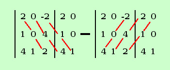
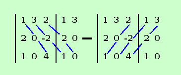

|
sviluppo Dato il seguente determinante calcolarne il valore, ove possibile, con la regola di Sarrus
Ho alcune righe e colonne dove ci sono degli zeri, mi conviene sviluppare dove ci sono piu' zeri, posso scegliere fra varie possibilita', scegliamo ad esempio l'ultima colonna. il primo elemento della colonna (a1,4) e' di posto dispari, l'ultimo (a4,4)e' di posto pari al solito il primo indice indica la riga ed il secondo la colonna
calcoliamo il primo Aggiungiamo le due colonne e poi facciamo i calcoli (saltiamo i conti con gli zeri)  Det 1 = 0 + 0 + 0 - 2·1·1 - 0 - 1·4·2 - 0 = -2 - 8 = - 10 calcoliamo il secondo Aggiungiamo le due colonne e poi facciamo i calcoli (saltiamo i conti con gli zeri)  Det 2 = 0 + 3·(-2)·1 + 0 - 0 - 0 - 4·2·3 - 0 = -6 - 24 = - 30 = -2·(-10) -1·(-30) = 20 + 30 = 50 |